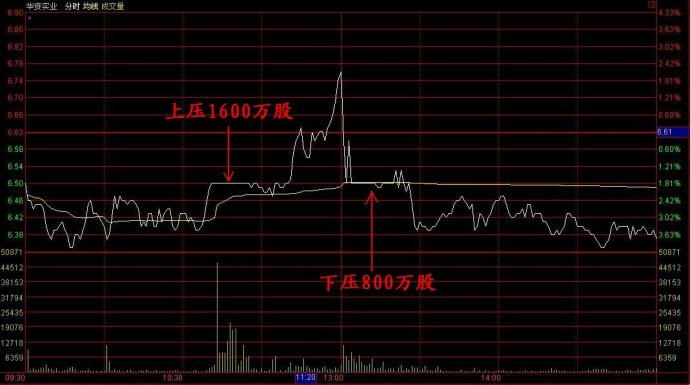

第130篇•几个问题的解答
谷为陵
今天解答网友提出的几个问题。
第一个问题是关于市场炒作主线的，“2468”网友说：“谷老师早上好，我感觉这波还有一条主线，涉矿题材大成、大元、中珠控股；互联网概念，拓维信息北纬通信、恒信移动、苹果概念的短炒金利科技、乐视网；昨天的汽车，水利反弹三峡水利龙头。可能会是一条线。”
为解答这个问题，我们先要搞清楚什么是市场炒作主线。所谓市场炒作主线，就是股市在某一段时间内的炒作热点。凡热点，一定有两个特点：一是会出现板块效应，是多只或者很多股票一起被大炒；二是一定会几只或者较多的黑马股，黑马中的龙头股的涨幅至少应该翻倍。我在上文所指出的四条炒作主线，均具有以上的特征。那么，“2468”网友所指的涉矿题材、互联网概念、汽车、水利是否是炒作主线呢？
我认为，涉矿题材应该归于有色板块之列，确实属于主线之一。互联网概念涉及股票众多，应该不下百只，但只有区区几只股票在涨，没有板块效应，应该属于个股行情，不应归于主线之一。至于汽车、水利，因这两个板块中并没有出现涨幅翻倍的黑马，所以，也不应归于主线之一。
第二个问题是个股的问题。有个叫蚂蚁的网友问：“老师，帮讲一下600191，今天在6.5的位置有个16万的压单被吃掉，求解读。”我更正一下，在6.5的位置不是16万的压单，而是1600万股的压单。该股今天总计成交4480万股，在6.5的位置总计成交2430万股，其中在股价上涨过程中压了（简称“上压”）1600万股，股价下跌过程中压了（简称“下压”）800万股。如下图所示：

这么大的卖单集中挂出，是什么人干的呢？2430万股卖单，其市值高达1.56亿元，这绝非散户所为，一定是主力所为。从该股近一两年的走势来看，因其股价长期处于逐级下跌的形态，因此，可以判断该股不存在长期主力，或者说长庄。既然没有大庄家，那么，谁还会持有2430万股的巨额股票呢？我认为是这两个月新进来的短期游资主力。游资主力做盘时，因将良好的流动性放在第一位，故其持筹率一般都不会很高。这2430万股卖单只占华资实业总股本的4.95%，还不到5%的持股红线。
那么，游资主力挂出这2430万股卖单到底是要干什么？我们还是用排除法吧，游资的目的无非有四个：一是吃货，二是出货，三是倒成交量，四是倒仓。首先，绝非吃货，这1600万股和800万股卖单都是主力自己的，出货肯定不成立。其次，也非出货。在非牛市主升浪时，主力在出货时是绝不会将总计2400万股卖单集中挂出的，因为这样做会把买盘吓跑。第三，也不是倒成交量。因该股刚刚自底部开始上涨，没有放大成交量做骗线的必要。现在只剩最后的一种可能了，那就是主力在倒仓。既然是倒仓，就说明主力还持有这些股票。但该主力应该清楚，这样非常明显的倒仓行为，是很容易引起监管层的注意的，法律风险很大。
今天晚了，就说到这里吧。